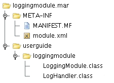

Writing Your Own Axis2 Module
Axis2 provides extended support for modules (See the Architecture Guide for more details about modules in Axis2). Let's create a custom module and deploy it to MyService, which we created earlier.
Send your feedback or questions to: java-dev@axis.apache.org. ( Subscription details are available on the Axis2 site.) Kindly prefix subject with [Axis2].
Content List
The following steps show the actions that need to be performed to deploy a custom module for a given Web service:
-
Create the Module Implementation
-
Create the Handlers
-
Create the module.xml
-
Modify the "axis2.xml" (if you need custom phases)
-
Modify the "services.xml" to engage modules at the deployment time.
-
Package in a ".mar" (Module Archive)
-
Deploy the module in Axis2
MyService with a Logging Module
Let's write a simple logging module for our sample located at the "samples\userguide\src" directory of the binary distribution. This module contains one handler that just logs the message that is passed through it. Axis2 uses ".mar" (Module Archive) to deploy modules in Axis2. The following diagram shows the file structure inside which needs to be there in the ".mar" archive. Let's create all these and see how it works.

Step1 : LoggingModule Class
LoggingModule is the implementation class of the Axis2 module. Axis2 modules should implement the "org.apache.axis2.modules.Module" interface with the following methods.
public void init(ConfigurationContext configContext, AxisModule module) throws AxisFault;//Initialize the module public void shutdown(ConfigurationContext configurationContext) throws AxisFault;//End of module processing public void engageNotify(AxisDescription axisDescription) throws AxisFault; public void applyPolicy(Policy policy, AxisDescription axisDescription) throws AxisFault ; public boolean canSupportAssertion(Assertion assertion) ;
The first three methods can be used to control the module initialization and the termination, and the next three methods are used to perform policy related operations. With the input parameter AxisConfiguration, the user is provided with the complete configuration hierarchy. This can be used to fine-tune the module behavior by the module writers. For a simple logging service, we can keep these methods blank in our implementation class.
Step2 : LogHandler
A module in Axis2 can contain, one or more handlers that perform various SOAP header processing at different phases. (See the Architecture Guide for more information on phases). To write a handler one should implement org.apache.axis2.engine.Handler. But for convenience, org.apache.axis2.handlers.AbstractHandler provides an abstract implementation of the Handler interface.
For the logging module, we will write a handler with the following methods. "public void invoke(MessageContext ctx);" is the method that is called by the Axis2 engine when the control is passed to the handler. "public void revoke(MessageContext ctx);" is called when the handlers are revoked by the Axis2 engine.
public class LogHandler extends AbstractHandler implements Handler {
private static final Log log = LogFactory.getLog(LogHandler.class);
private String name;
public String getName() {
return name;
}
public InvocationResponse invoke(MessageContext msgContext) throws AxisFault {
log.info(msgContext.getEnvelope().toString());
return InvocationResponse.CONTINUE;
}
public void revoke(MessageContext msgContext) {
log.info(msgContext.getEnvelope().toString());
}
public void setName(String name) {
this.name = name;
}
}
Step3 : module.xml
"module.xml" contains the deployment configurations for a particular module. It contains details such as the Implementation class of the module (in this example it is the "LoggingModule" class and various handlers that will run in different phases). The "module.xml" for the logging module will be as follows:
<module name="logging" class="userguide.loggingmodule.LoggingModule">
<InFlow>
<handler name="InFlowLogHandler" class="userguide.loggingmodule.LogHandler">
<order phase="loggingPhase" />
</handler>
</InFlow>
<OutFlow>
<handler name="OutFlowLogHandler" class="userguide.loggingmodule.LogHandler">
<order phase="loggingPhase"/>
</handler>
</OutFlow>
<OutFaultFlow>
<handler name="FaultOutFlowLogHandler" class="userguide.loggingmodule.LogHandler">
<order phase="loggingPhase"/>
</handler>
</OutFaultFlow>
<InFaultFlow>
<handler name="FaultInFlowLogHandler" class="userguide.loggingmodule.LogHandler">
<order phase="loggingPhase"/>
</handler>
</InFaultFlow>
</module>
As you can see, there are four flows defined in the "module.xml"
- InFlow Represents the handler chain that will run when a message is coming in.
-
OutFlow Represents the handler chain that will run when the message is going out.
-
OutFaultFlow - Represents the handler chain that will run when there is a fault, and the fault is going out.
-
InFaultFlow - Represents the handler chain that will run when there is a fault, and the fault is coming in.
The following set of tags describe the name of the handler, handler class, and the phase in which this handler is going to run. "InFlowLogHandler" is the name given for the particular instance of this handler class. The value of the class attribute is the actual implementation class for this handler. Since we are writing a logging handler, we can reuse the same handler in all these phases. However, this may not be the same for all the modules. "<order phase="loggingPhase" />" describes the phase in which this handler runs.
<handler name="InFlowLogHandler" class="userguide.loggingmodule.LogHandler"> <order phase="loggingPhase" /> </handler>
To learn more about Phase rules, check out the article Axis2 Execution Framework
Step 4: Modify the "axis2.xml"
In this handler, the "loggingPhase", is defined by the module writer. It is not a pre-defined handler phase, hence the module writer should introduce it to the "axis2.xml" (NOT the services.xml) so that the Axis2 engine knows where to place the handler in different "flows" (inFlow, outFlow, etc.). The following XML lines show the respective changes made to the "axis2.xml" in order to deploy the logging module in the Axis2 engine. This is an extract of the phase section of "axis2.xml".
<!-- ================================================= -->
<!-- Phases -->
<!-- ================================================= -->
<phaseOrder type="inflow">
<!-- System pre defined phases -->
<phase name="TransportIn"/>
<phase name="PreDispatch"/>
<phase name="Dispatch" class="org.apache.axis2.engine.DispatchPhase">
<handler name="AddressingBasedDispatcher"
class="org.apache.axis2.dispatchers.AddressingBasedDispatcher">
<order phase="Dispatch"/>
</handler>
<handler name="RequestURIBasedDispatcher"
class="org.apache.axis2.dispatchers.RequestURIBasedDispatcher">
<order phase="Dispatch"/>
</handler>
<handler name="SOAPActionBasedDispatcher"
class="org.apache.axis2.dispatchers.SOAPActionBasedDispatcher">
<order phase="Dispatch"/>
</handler>
<handler name="SOAPMessageBodyBasedDispatcher"
class="org.apache.axis2.dispatchers.SOAPMessageBodyBasedDispatcher">
<order phase="Dispatch"/>
</handler>
<handler name="InstanceDispatcher"
class="org.apache.axis2.engine.InstanceDispatcher">
<order phase="PostDispatch"/>
</handler>
</phase>
<!-- System pre defined phases -->
<!-- After Postdispatch phase module author or service author can add any phase he wants -->
<phase name="OperationInPhase"/>
<phase name="loggingPhase"/>
</phaseOrder>
<phaseOrder type="outflow">
<!-- user can add his own phases to this area -->
<phase name="OperationOutPhase"/>
<phase name="loggingPhase"/>
<!--system predefined phases-->
<!--these phases will run irrespective of the service-->
<phase name="PolicyDetermination"/>
<phase name="MessageOut"/>
</phaseOrder/>
<phaseOrder type="INfaultflow">
<!-- user can add his own phases to this area -->
<phase name="OperationInFaultPhase"/>
<phase name="loggingPhase"/>
</phaseOrder>
<phaseOrder type="Outfaultflow">
<!-- user can add his own phases to this area -->
<phase name="OperationOutFaultPhase"/>
<phase name="loggingPhase"/>
<phase name="PolicyDetermination"/>
<phase name="MessageOut"/>
</phaseOrder>
The text in green, the custom phase "loggingPhase" is placed in all the flows, hence that phase will be called in all the message flows in the engine. Since our module is associated with this phase, the LogHandler inside the module will now be executed in this phase.
Step5 : Modify the "services.xml"
Up to this point, we have created the required classes and configuration descriptions for the logging module, and by changing the "axis2.xml" we created the required phases for the logging module.
Next step is to "engage" (use) this module in one of our services. For this, let's use the same Web service that we have used throughout the user's guide- MyService. However, since we need to modify the "services.xml" of MyService in order to engage this module, we use a separate Web service, but with similar operations.
The code for this service can be found in the "Axis2_HOME/samples/userguide/src/userguide/example2" directory. The simple changes that we have done to "services.xml' are shown in green in the following lines of xml.
<service name="MyServiceWithModule"> <description> This is a sample Web service with a logging module engaged. </description> <module ref="logging"/> <parameter name="ServiceClass" locked="xsd:false">userguide.example2.MyService</parameter> <operation name="echo"> <messageReceiver class="org.apache.axis2.receivers.RawXMLINOutMessageReceiver"/> </operation> <operation name="ping"> <messageReceiver class="org.apache.axis2.receivers.RawXMLINOutMessageReceiver"/> </operation> </service>
In this example, we have changed the service name (the implementation class is very similar to what we have used earlier, although it is in a different package). In addition we have added the line "<module ref="logging"/>" to "services.xml". This informs the Axis2 engine that the module "logging" should be engaged for this service. The handler inside the module will be executed in their respective phases as described by the "module.xml".
Step6 : Packaging
Before deploying the module, we need to create the ".mar" file for this module. This can be done, using the "jar" command and then renaming the created .jar file. Else, you can find the "logging.mar" that has already been created in the "Axis2_HOME/samples/userguide" directory.
Step7 : Deploy the Module in Axis2
Deploying a module in Axis2 requires the user to create a directory with the name "modules" in the "webapps/axis2/WEB-INF" directory of their servlet container, and then copying the ".mar" file to that directory. So let's first create the "modules" directory and drop the "logging.mar" into this directory.
Although the required changes to the "services.xml" is very little, we have created a separate service archive (MyServiceWithModule.aar) for users to deploy the service..
Deploy this service using the same steps used in the 'Step 4: Deploy Web Service' sub section in 'Writing a New Service using Codegeneration', and copy the "logging.mar" file to the "modules" directory.
Then run 'ant run.client.servicewithmodule' from axis2home/samples/userguide directory
Note: To see the logs, the user needs to modify the "log4j.properties" to log INFO. The property file is located in "webapps/axis2/WEB-INF/classes" of your servlet container. Change the line "log4j.rootCategory= ERROR, LOGFILE" to "log4j.rootCategory=INFO, ERROR, LOGFILE".
Note (on samples): All the samples mentioned in the user's guide are located at the "samples\userguide\src" directory of the binary distribution.